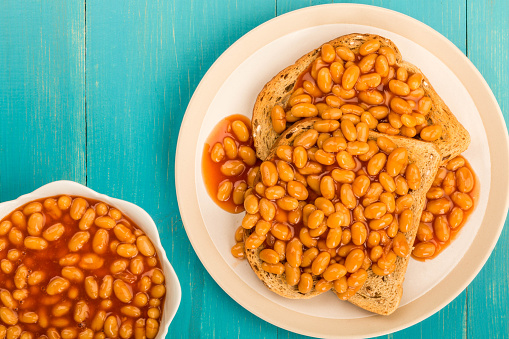

Toast with butter
Ingredients
- 2 slices of bread.
- butter.
Method
- Set toaster to favourite setting.
- Put the bread in the toaster and switch on.
- When toast is cooked to your liking place toasted bread on a plate.
- Spread butter on toast and serve immediately.

Beans on toast
Ingredients
- Tin of beans.
- 2 slices of bread.
- butter.
Method
- Open the tin of beans and put the contents into a pan.
- Heat the beans for time specified on the packaging.
- Put the bread in the toaster and switch on.
- When toast is cooked to your liking place toasted bread on a plate and spread butter on the toast.
- Pour the hot beans on the toast and serve immediately.

Eggs on toast with bacon
Ingredients
- 2 eggs, tablespoon of milk, pinch of salt.
- 1 slice of bread.
- butter.
Method
- Crack the eggs into a bowl,add the salt and milk
- whisk until light and fluffy,pour egg mixture into a frying pan and cook on a low heat.
- Put the bread in the toaster and switch on.
- butter cooked toast, place the scrambled eggs on the toast and serve immediately.
- serving suggestion add cooked bacon and mushrooms

Fried eggs on toast
Ingredients
- 2 eggs.
- 2 slices of bread.
- butter.
- tablespoon of cooking oil.
Method
- Crack the eggs into a frying pan with the oil.
- Cook on a medium heat, flip eggs over half way through if prefered.
- Put the bread in the toaster and switch on.
- butter cooked toast, place the fried eggs on the toast and serve immediately.